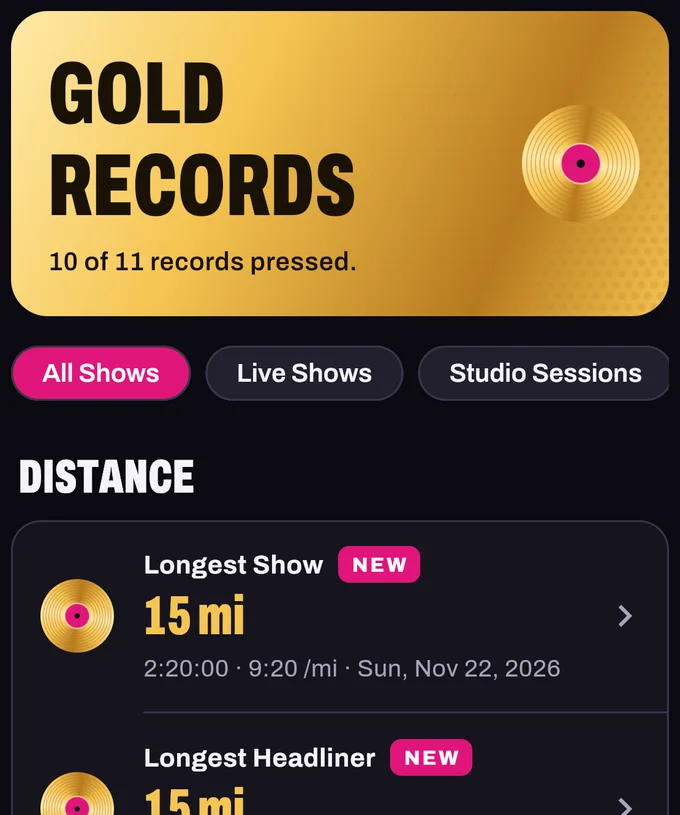

The 11th is the marathon itself.
Eleven Gold Records, worked out fresh every time
B4
Longest Show, biggest week, fastest 10K, most climbing, steepest Studio Session and six more. None of them are stored: the app reads them off your log each time you look, so fixing a typo in an old Show can’t leave a wrong record hanging on the wall.
One footnote, because it’s true: the race-distance records use a Show’s average pace, not your fastest split. The app logs one distance and one time per Show, so that’s all it honestly knows.